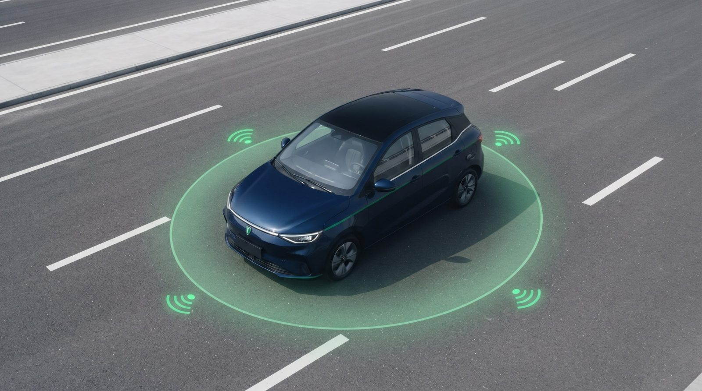
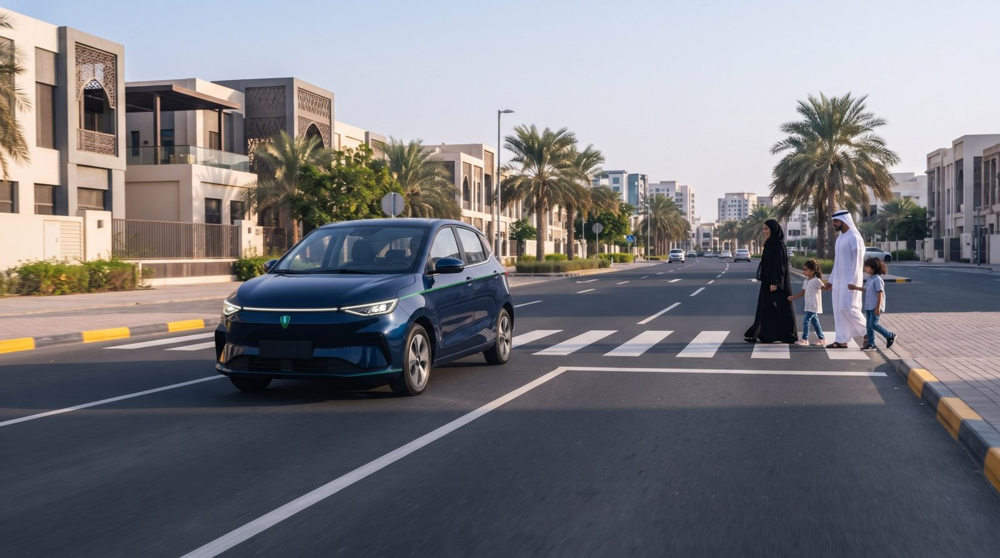
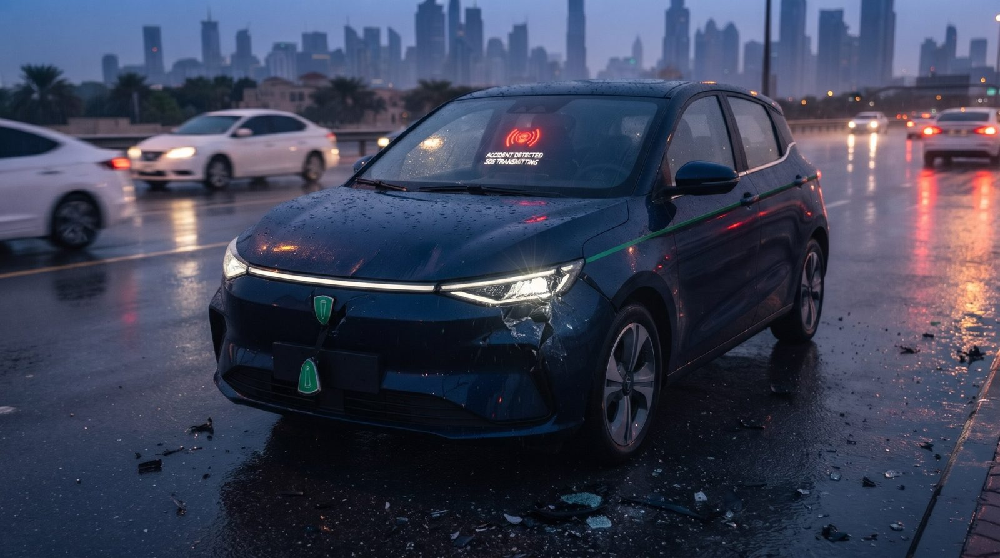
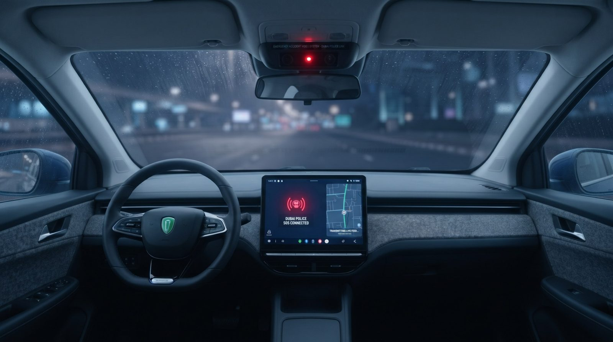
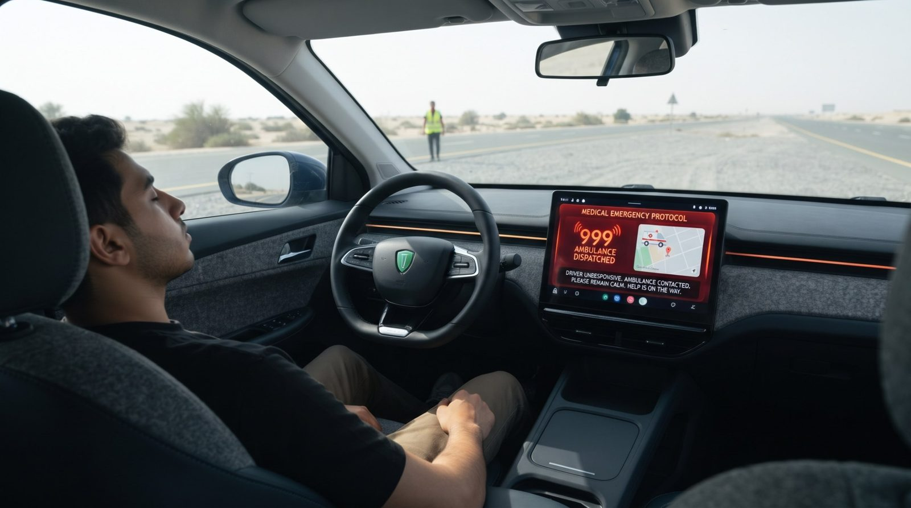

Six systems watching the road, so you never drive alone.
The ONE uses sensors, cameras and AI to spot danger early. If a crash is close, it warns you first and then helps you brake or steer.

The six safety systems
Automatic emergency braking
If a car, person or object is suddenly in front of you, The ONE warns you and brakes if you do not react in time.
Lane help
The car gently guides you back if you drift out of your lane without using the indicator.
Tiredness alert
A small camera notices signs of tiredness, such as long blinks, and suggests a break.
Phone lock
While the car moves, texting and social apps are paused. Calls work hands-free and navigation keeps working.
360° camera
See all around the car when parking or turning in narrow streets.
Learner speed limit
Families can set a top speed while the driver is still learning.

Seeing people first
Pedestrians and cyclists are the hardest to see, especially at dusk. The ONE’s cameras are trained to spot people near the road and give an early warning before a crossing.
If the driver does not slow down, automatic braking helps stop the car.
Remember: safety systems support you but do not replace careful driving. Always look, slow down and give way to pedestrians.
Emergency SOS Camera
If a crash happens, every second counts. The ONE is designed to call for help by itself, even if the driver cannot.

- Crash detectedSensors feel a sudden impact or airbag release.
- Video savedThe front and cabin cameras keep a short video from just before and after the crash.
- SOS sentThe car sends an alert with its exact GPS location and the video to emergency services, such as Dubai Police.
- Help on the wayThe screen tells the driver that help is coming and keeps the line open.
Drivers can also press the red SOS button above the mirror at any time.
Privacy first
The emergency camera only sends video and location when a crash is detected or the SOS button is pressed. At all other times, nothing is shared, so our privacy promise stays true.
Concept feature: SAFEDRIVE ONE is a fictional brand made for a student project. It has no real partnership with Dubai Police. In the UAE, call 999 for police and 998 for an ambulance.


Safe Stop Assist
Falling asleep at the wheel is one of the most dangerous things that can happen on a long drive. Safe Stop Assist steps in when the driver cannot.
- Notices tirednessThe driver camera sees long blinks, head nodding or drifting in the lane.
- Warns the driverA sound, seat vibration and the coach say: “You look tired. Let’s find a safe place to stop.”
- Stops safelyIf there is no response, hazard lights turn on and the car slowly moves to the hard shoulder and stops.
- Tries to wake the driverAlarms, flashing lights and the coach calling the driver’s name.
- Calls an ambulanceIf the driver does not respond within 5 minutes, or the camera sees no movement at all, the car calls for an ambulance with its location straight away.